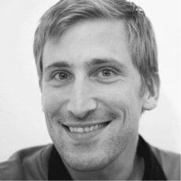
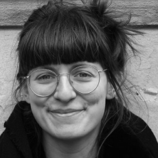

Demokratische Prozesse in einer digitalisierten Welt
Why we knot dots
Zukunftsfähige Arbeitsumfelder
Wir möchten ressourcenschonende Organisationsstrukturen für Partner*innen in Politik, Verwaltung und Zivilbevölkerung schaffen, die zu messbar besseren Ergebnissen führen. Gute Ergebnisse erreicht man nur in motivierten und kreativen Teams, und solche Teams entstehen durch Kommunikation, Eigenverantwortung und Selbstwirksamkeit: „Mein Beitrag ist ein weiterer Schritt zu unserem gemeinsamen Ziel.“
Digitalisierung ist ein Prozess
Wir sehen die Digitalisierung als Chance, komplexe Anforderungen mit der Unterstützung der richtigen Werkzeuge effizienter und besser zu lösen. Die Voraussetzungen dafür sind, dass Beteiligte unkompliziert miteinander kommunizieren, dass ihnen alle relevanten Informationen zur Verfügung gestellt werden und dass sie eigenverantwortlich und arbeitsteilig wirken. Auf diese Weise lassen sich die gewaltigen Herausforderungen unserer Zeit bewältigen.
Demokratie stärken
Es gibt Entscheidungen, die auch in einer hochtechnologisierten Welt nicht von Computern getroffen werden dürfen: Wir möchten helfen, Entscheidungsprozesse so zu gestalten, dass digitale Werkzeuge an den richtigen Stellen den demokratischen Aushandlungsprozess unterstützen. Technologie soll uns Menschen dabei helfen, bessere Entscheidungen schneller zu treffen; sie darf aber nicht dafür eingesetzt werden, die Entscheidungen für uns zu treffen.
Woran wir arbeiten
What knot dots are working on
Digitalisierung und Smart City
Wir unterstützen die Kolleg*innen beim Modellprojekt Smart Cities „Detmold - die co-kreative Stadt“ beim Aufbau des Projektmanagements der Umsetzungsmaßnahme "Mobilität X multi". Dafür führen wir neue Methoden und Werkzeuge im agilen Projektmanagement, im agilen Produktmanagement und im iterativen rapid Prototyping mit Click-Dummies ein.
Agile Verwaltung
Wir entwickeln für das Modellprojekt Smart Cities „Detmold - die Ko-kreative Stadt“ agile Steuerungs-, Monitoring- und Arbeitsprozesse für die unterschiedlichen Ebenen der Verwaltung und insbesondere für intersektorale Projektteams. Dafür integrieren wir neue Methoden, Formate und Werkzeuge für effiziente und eigenverantwortliche Prozesse in die bestehenden Abläufe.
Konzeption und Entwicklung des Strategie- und Analysetools
Unser wichtigstes Projekt und Kern von knot dots, in dem alle anderen beschriebenen Bereiche und Themen gewissermaßen zusammenlaufen, ist das Analyse- und Strategietool, das wir im Rahmen der Modellprojekte Smart Cities als Open-Source-Software für alle entwickeln.Wir freuen uns auf den baldigen Launch der Plattform auf knotdots.net!
Die Geschichte hinter knot dots
The story of knot dots
Der Kern unserer Beratung spiegelt unsere Werte wider. Von Beginn an haben wir die knot dots UG als einen Spielplatz für motivierte Mitarbeiter*innen geplant. Wir sind kein typisches Start-up mit Sitzsack und Bällebad, das insbesondere den Interessen der Gesellschafter*innen und Investor*innen verpflichtet ist. Deswegen haben wir keine Investor*innen. Deswegen teilen unsere Gesellschafter*innen die Gewinne mit denen, die an dem Erfolg gearbeitet haben. Deswegen haben wir uns interne Strukturen gegeben, die allen Mitarbeiter*innen Mitbestimmung, ein transparentes und für alle gleiches Gehaltsmodell und finanzielle Teilhabe bietet.
knot dots schafft einen Rahmen, der sich den individuellen Anforderungen der Mitarbeiter*innen anpasst: Möchte ich heute rennen und Verantwortung übernehmen, gibt es morgen vielleicht Wichtigeres, wie beispielsweise die Familie. Das Unternehmen muss sich den Lebenswirklichkeiten der Mitarbeiter*innen anpassen, nicht umgekehrt. Und das gleiche gilt für die Zusammenarbeit mit unseren Kund*innen und unseren Partner*innen. Dadurch entsteht Vertrauen und Vertrauen und Augenhöhe sind das beste Fundament für den gemeinsamen Weg.
Die Köpfe hinter knot dots
We are knot dots
knot dots bietet kreativen und motivierten Köpfen einen kollaborativen Handlungsraum. Intern wie extern fördern wir mutige und experimentelle Arbeitsumfelder. Unser Team bündelt langjährige Erfahrung und Kompetenz in diesen Bereichen: Open-Source-Entwicklungen, Anwendung agiler Methoden, Partizipation und die Zusammenarbeit mit öffentlichen Institutionen.
-
Boris Hekele Beratung & Netzwerk
„Gute Kultur ist das A und O. Damit meine ich nicht nur die Kultur im gesellschaftlichen Sinne, sondern auch die Kultur in Unternehmen und Organisationen. Kultur schafft Identität.“
-

Daniel Reichert Beratung & Produktentwicklung
„Ich möchte für uns als Gesellschaft daran arbeiten, dass wir gemeinsam einen Weg finden, auf dem wir mit allen Akteur*innen in der noch verbleibenden Zeit die großen und dringlichen Herausforderungen bewältigen.“
-

Judith Gerhardt Stadtplanung & agile Verwaltungsprozesse
„Bei der Vielzahl an Stimmen, Bedürfnissen, Wünschen und Ideen von heterogenen demokratischen Gesellschaften ist gute Kommunikation essenziell. Hier möchte ich moderierend und vermittelnd ansetzen.“
-
Helena Kelbert Projektmanagement & Stadtplanung
„Die wichtige Rolle von Stadtverwaltungen für politische Aushandlungsprozesse hat mich früh fasziniert. Ich möchte einen Beitrag leisten, die bestmöglichen Effekte für die Demokratie und die Nachhaltigkeit von Systemen zu erzielen.“
-
Nina Hasch User Experience Design & Prototyping
„Unter Einbeziehung meiner vielfältigen Erfahrungen möchte ich innovative Lösungen für zukunftsweisende Projekte entwickeln.